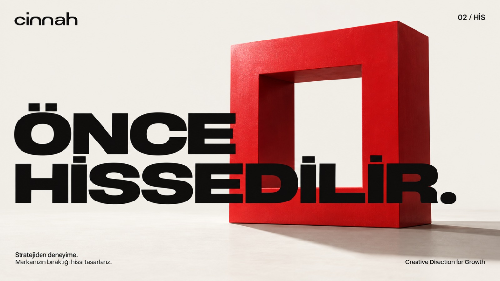
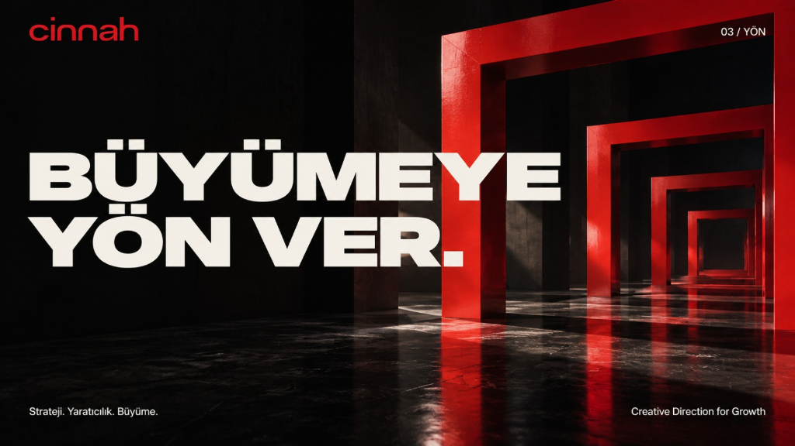
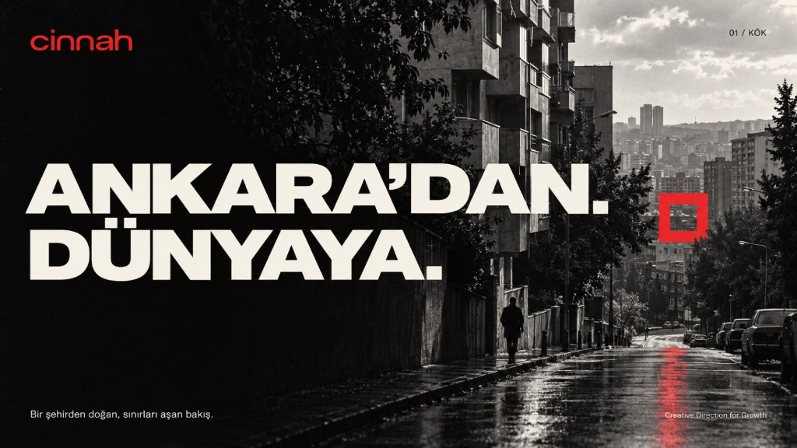
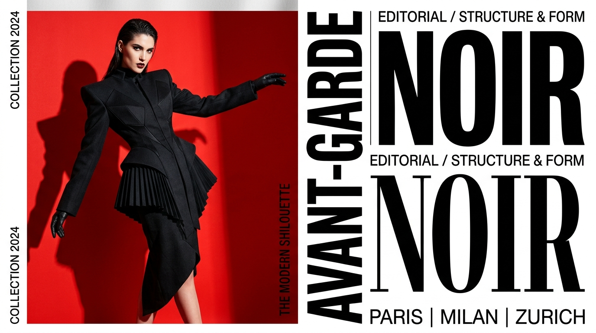

02 / HİS · MARKA MİMARİSİ↗
Önce Hissedilir.
Stratejiden deneyime. Markanızın zihinlerde ve kalplerde bıraktığı eşsiz hissi tasarlarız.
Büyüme İçin Yaratıcı Yön & Marka Mimarisi
Sıradanlıkla yetinmeyen markalar için.
Markanızın zihinlerde bıraktığı iz, sadece ne söylediğinizle değil; yarattığınız hissin derinliği ve mimari netliğiyle ölçülür.
Bir şehirden doğan, sınırları aşan bakış. Başkentin rasyonel zekasından, brütalist mimari mirasından ve entelektüel ağırlığından ilham alıyoruz. Köklerimiz sağlam, vizyonumuz küresel.
Stratejiden deneyime. İnsanlar rasyonel gerekçelerle onaylar ama duygusal rezonansla karar verir. Markanızın ilk temas anında bıraktığı o eşsiz ve silinmez hissi inşa ederiz.
Strateji. Yaratıcılık. Büyüme. Yaratıcılık süsleme sanatı değildir; en keskin rekabet avantajıdır. Doğru kreatif direksiyon, bir markanın kategorisini domine etmesini sağlar.
Fazlalıklardan arındırılmış, cesur ve monolitik bir tasarım disiplini. Cinnah Caddesi'nin mimari netliği stüdyomuzun her işine yansır. Net konuşur, net üretiriz.

02 / HİS · MARKA MİMARİSİStratejiden deneyime. Markanızın zihinlerde ve kalplerde bıraktığı eşsiz hissi tasarlarız.

03 / YÖN · BÜYÜME STRATEJİSİStrateji. Yaratıcılık. Büyüme. Markaları kategori liderliğine taşıyan mimari kılavuzluk.

01 / KÖK · ŞEHİR & VİZYONBir şehirden doğan, sınırları aşan bakış. Ankara'nın brütalist dokusunu küresel yaratımla buluşturuyoruz.

04 / TİPOGRAFİ & YÜKSEK MODARadikal scarlet red zeminler ve anıtsal grotesk tipografiyle yüksek modaya brütalist bir kimlik kazandırma.
Markanızın pazardaki benzersiz yerini belirliyor; slogan, vizyon, ses tonu ve hikaye mimarisini en üst seviyede kurguluyoruz.
Logodan öte, markanızın tüm temas noktalarında konuşan anıtsal görsel sistemler, özel tipografiler ve ödünsüz kurumsal rehberler tasarlıyoruz.
Yüksek prodüksiyon kalitesine sahip reklam filmleri, dijital kampanyalar, fotoğraf çekimleri ve dikkat çeken açık hava yerleştirmeleri.
Web siteleri, etkileşimli dijital platformlar, 3D görselleştirmeler ve markanızı fiziksel dünyada hissettiren mekansal enstalasyonlar.
CİNNAH; gürültüden uzak, derinlikli düşünceyi ve cesur yaratıcı vizyonu merkeze alan bağımsız bir reklam ve marka ajansıdır. Ankara'nın brütalist yapılarından ilham alan strüktürel disiplinimiz, işlerimize zamansız bir ağırlık kazandırır.
Bizim için her proje, bir markanın pazar içindeki duruşunu dönüştürme fırsatıdır. Tasarım süslemez; inşa eder. İletişim duyurmaz; hissettirir.
"ÖNCE HİSSEDİLİR, SONRA KONUŞULUR."
CİNNAH MANİFESTO 2026Ankara Cinnah Caddesi'ndeki stüdyomuzda tanışmak ya da küresel projenizi başlatmak için ekibimize doğrudan ulaşın.
hello@cinnah.agency ↗
Cinnah Caddesi No: 42/B
Çankaya 06690
Ankara / TÜRKİYE
+90 (312) 440 26 00
Pzt - Cum: 09:00 - 19:00 (GMT+3)